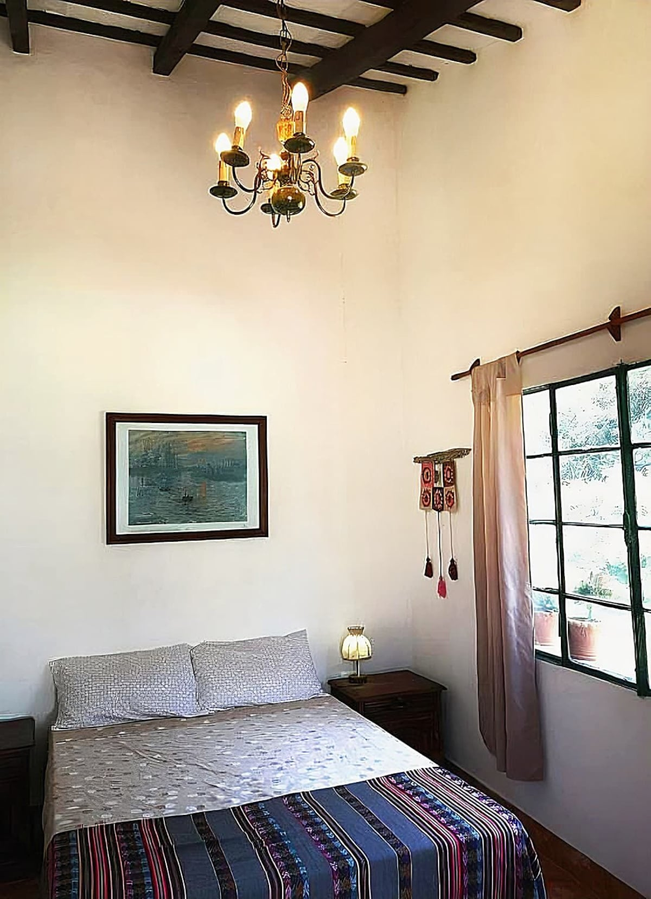
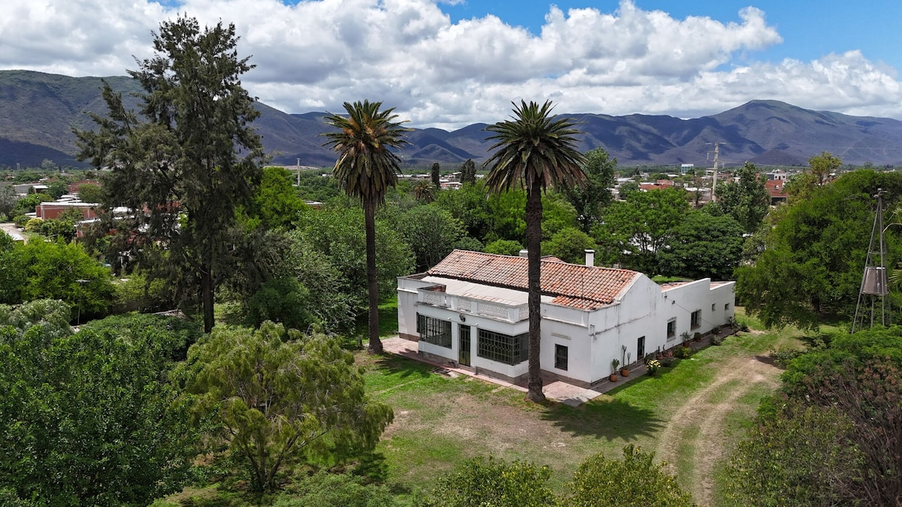
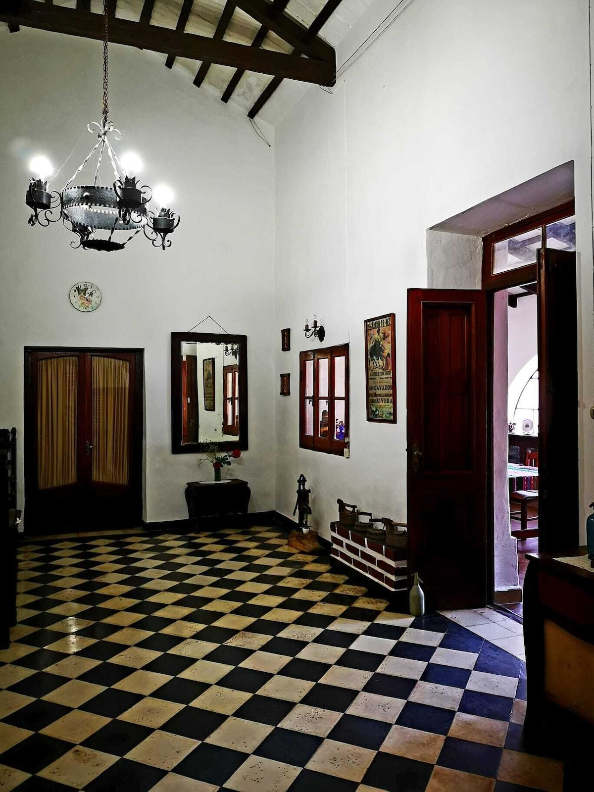
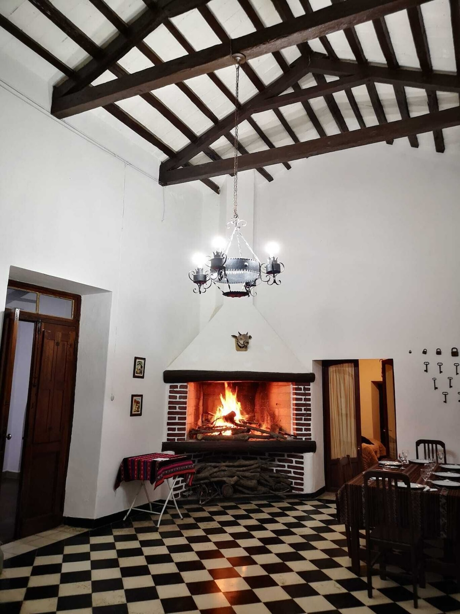
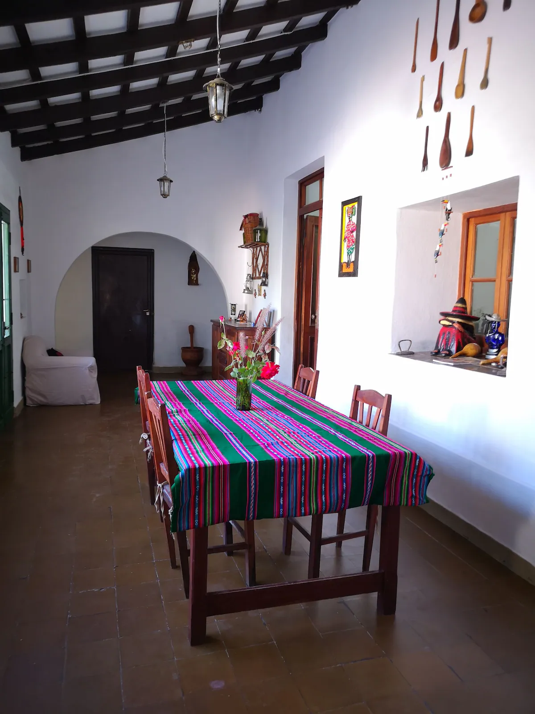
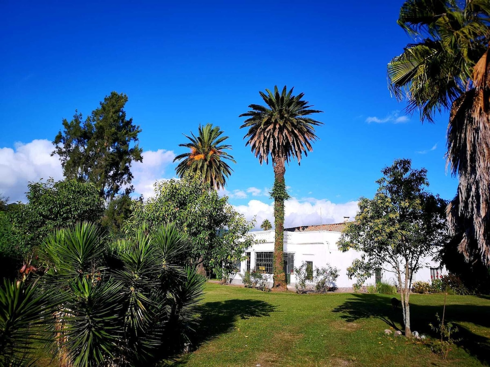
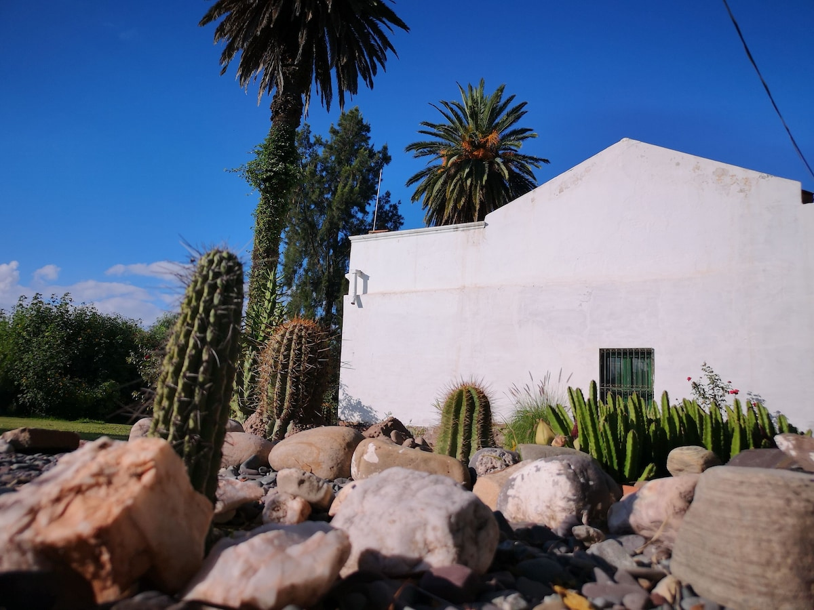
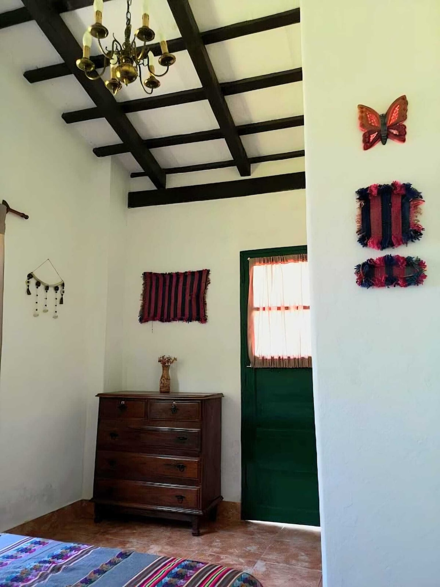
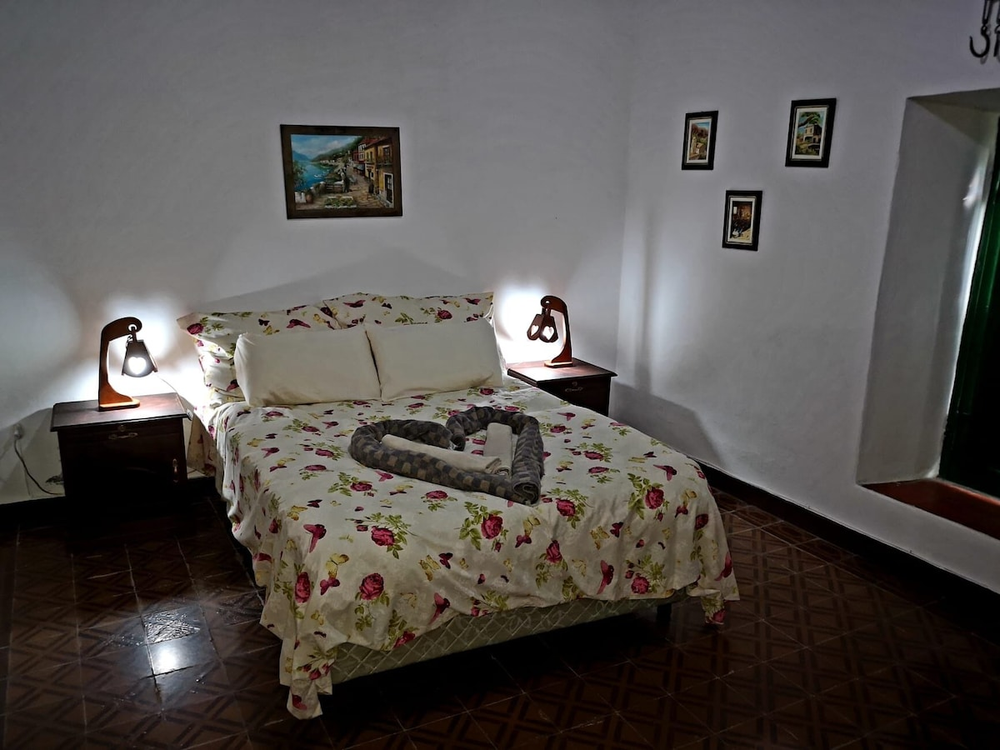

Doble con vista al jardín
- Superficie
- 22 m²
- Cama
- 1 matrimonial
- Huéspedes
- 2 personas
- Vista
- Ventana al jardín

Casa rural · Valle de Lerma, Salta
Una casona de muros blancos, vigas de madera y jardín arbolado, a veinte minutos del centro de Salta y cerca del aeropuerto.
La casa
La finca conserva su arquitectura clásica: paredes encaladas, carpintería de madera, galerías y salones amplios donde se desayuna y se charla sin apuro.



Una casa con historia, pensada para descansar. Adentro hay textiles del norte, faroles, planchas antiguas y objetos de campo que cuentan cómo se vivía acá. Afuera, el silencio del valle.
Es una base cómoda para conocer Salta: la ciudad, la Catedral y la estación del Tren a las Nubes quedan a poco más de veinte minutos en auto, y el aeropuerto a media hora.

El jardín
Pasto para caminar descalzo, sombra para leer y un rincón de cactus contra la pared blanca. Hay asador para armar algo al aire libre y patio para sentarse a la tarde, con los cerros de fondo.

Habitaciones
Todas con cama matrimonial, baño privado, ropa de cama y toallas. Son habitaciones para no fumadores.


La estadía

Cómo llegar
Cerca del Aeropuerto Internacional de Salta y con salida fácil hacia el valle. Si venís en auto, estacionás dentro de la finca.
| Lugar | En auto | Distancia |
|---|---|---|
| Plaza 9 de JulioCentro histórico de Salta | 21 min | 10,6 km |
| Catedral de Salta | 21 min | 10,6 km |
| Tren a las Nubes | 26 min | 10,2 km |
| Estación de tren Salta | 27 min | — |
| Aeropuerto Martín Miguel de GüemesSLA · Salta | 29 min | — |
| Santuario de la Virgen de los Tres Cerritos | 30 min | 15,7 km |
| El Patio de la EmpanadaPara comer | 9 min | — |
Reservas
Contanos cuándo querés venir y cuántos son. Te respondemos con la disponibilidad y la tarifa.
Diseño web
¿Tenés un alojamiento y querés un sitio propio, pensado para tu lugar y para recibir reservas directas? Pedí el tuyo.
Ver referencias y precios